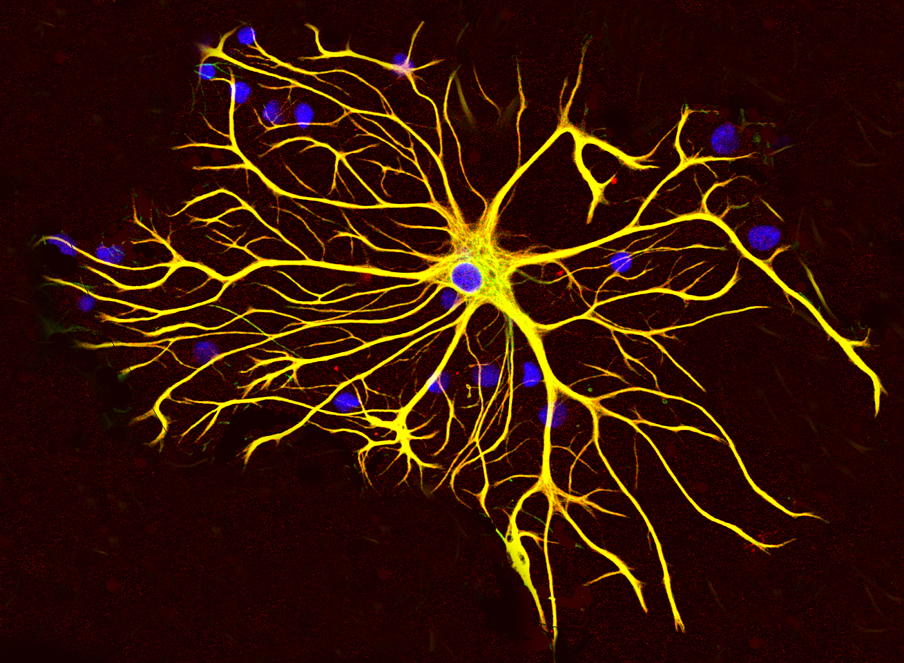

Your brain's support cells keep their own time
Astrocytes were written off as the brain's maintenance crew. A new study in mice catches them forming ordered waves of calcium during a fear memory, and replaying those same waves when the mouse returns to the place it happened but not to a new one.

Astrocytes are the brain cells nobody writes headlines about. They are the star-shaped glia that rival neurons in number across much of the brain, and for most of the last century they got filed under support staff. They feed neurons, mop up spent neurotransmitter, and hold the tissue together. The word glia even comes from the Greek for glue. Neurons did the thinking, the glia did the upkeep. A new study in mice says that filing was too quick.
What they actually did
A team led by Ryan Senne, with senior author Steve Ramirez at Boston University, reports in Nature Neuroscience, published on September 16, 2026, that astrocytes in the hippocampus track part of a memory's timing. They used one-photon calcium imaging, a tiny head-mounted microscope looking through a lens set just above the CA1 region of the hippocampus, to watch the same population of astrocytes in freely moving mice across several days. Astrocytes do not fire electrical spikes the way neurons do, so the team tracked the other language these cells speak, slow waves of calcium rising and falling inside them.
The task was standard fear learning. On the first day, fourteen mice spent about five and a half minutes in a chamber where they got four brief foot shocks. On a later day they went back, either into the same chamber with no shock this time, or into a brand new one, so the researchers could ask whether the brain treated the two places differently.
Time cells, but made of glia
When neuroscientists talk about how the hippocampus keeps track of time, they usually mean time cells, neurons that fire in a relay, each one taking its turn a little later than the last, so the group as a whole lays down a track of the seconds ticking past during an experience. That relay is one of the ways a memory gets stamped with when things happened. What this team found is that astrocytes run a relay of their own. After each foot shock, different astrocytes hit their calcium peaks at different but reliably ordered times, tracing out the same kind of compressed timeline. In the authors' words, "foot shock evoked robust astrocytic calcium-event sequences with a time-compressed structure that resembled time-cell activity." Most of the peaks landed within a few seconds of the shock, with the whole sequence stretching out over tens of seconds.
The part that turns support staff into something more
Reacting to a shock is not the same as remembering it. The test that matters came when they went back. When the mice were put back in the same chamber, now with no shock at all, the astrocyte sequences came back. As the paper puts it, "similar sequences re-emerged during later exposure to the conditioned context despite the absence of shock, but were not detected in a distinct context." When the mice were dropped into a new chamber instead, the pattern fell apart into what the authors describe as statistical noise, a formless smear with no reliable order. Comparing the two situations across animals separated them cleanly, a difference the authors report is unlikely to be chance. So the astrocytes were not just flinching at a shock. They were replaying a timed pattern that belonged to that specific place, the way a memory does.
A twist worth sitting with
One result runs against the easy story. You might guess the memory sequences would show up while the mouse is frozen in fear, the classic sign a rodent remembers something bad. It was the other way around. During the stretches when a sequence was playing, the animals actually froze less, not more, a small but real effect. The sequences lined up with moments when the animal was shifting between behavioral states rather than locked in place, and that link vanished in the new chamber. Nobody fully knows what to make of it yet, and the authors do not oversell it. It is a good reminder that catching a pattern is not the same as knowing its job.
Where to keep your guard up
This is fourteen mice, not people, and one small region of the hippocampus. It is imaging, which shows astrocytes take part in the memory's timing, not that they cause it. Nobody switched the astrocyte sequences off to see whether the memory suffered, so the arrow could still run the other way, with neurons driving the astrocytes rather than the astrocytes adding something of their own. The one-photon microscope catches the big, slow calcium events in the cell bodies and misses the fine signaling in an astrocyte's smallest branches. And the whole case rests on one imaging method with no causal test, so the strongest version of the claim still needs an independent replication and a way to switch the sequences off and watch what the memory does. What the paper delivers is a clear, testable idea, that astrocytes track part of the clock a memory runs on.
For a hundred years the glia were the stagehands. This study catches them speaking lines.
The bottom line
Memory has always been told as a story about neurons, the cells that spike and wire together. This work does not rewrite that story so much as widen the cast. The star-shaped cells we filed under upkeep turn out to keep a timeline of their own, one that comes back when a memory does. As the authors sum it up, their results "suggest a direct role for astrocytes in generating hippocampal representations of associative memory." If that holds up, the next question is not only which neurons hold a memory, but which cells, of every kind, hold it together.